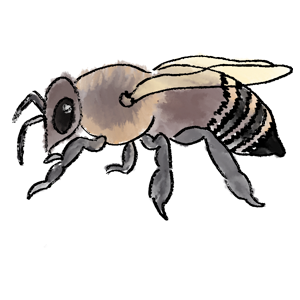

Did you know that one colony of Western honey bees could contain around 30,000 to 80,000 bees, including the queen, drones and workers. Western honey bee queens are the only reproductive females in colonies, and are the mothers of all workers, drones and the next generation of queens. Queens can produce up to 2,000 eggs daily. Western honey bee workers are responsible for building the cells in which queens place their eggs. Once each egg hatches into larva, young workers feed them until, after several molts and a week of feeding; the larvae enter the pupal stage and then emerge as adults.